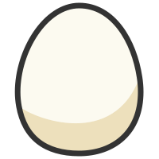
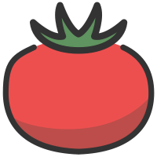
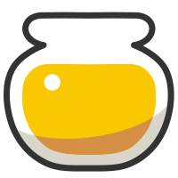

設計レビュー用モック。レシピの材料数とLv60エナジーは実データを使用。担当の能力・日数は説明用の設定例です。公式計算は実行しません。
料理エナジープランナー
1面待ち目標・計算条件
1食 103個
Lv60：73,793エナジー
フィールド・イベント・大成功の加算前

とくせんエッグ ×24
あんみんトマト ×29
あまいミツ ×32ずっしりカボチャ ×18元ツールの計算環境
現在の個体能力・24時間条件。フィールド、イベント、睡眠、回復などの環境を担当全体に適用。ここでは通常週・フィールドボーナス0%・キャンプなしの表示例です。
初期備蓄
食材バッグ 700 / 800個
レシピ以外の食材もバッグ容量に含めます。2・3面待ちでは、この備蓄を全カテゴリで共通利用します。
担当・編成日数
同じ個体の編成日数は一度だけ計上。取得量とスキル発動は、その日数から同時に求めます。
| 個体・役割 | 1日あたりの期待量（設定例） | 基本日数 | チャンス追加日数 | 必要日数の参考 |
|---|---|---|---|---|
| ハピナス Lv60 食材 | とくせんエッグ 70個 | — | 4.34日 | |
| レントラー Lv60 食材 | あんみんトマト 80個 | — | 5.11日 | |
| フシギバナ Lv60 食材 | あまいミツ 100個 | — | 4.72日 | |
| パンプジン Lv60 食材 | ずっしりカボチャ 55個 | — | 5.05日 | |
| ジバコイル Lv60 鍋拡張 | 料理パワーアップS 4.5回 | — | 4.00日 | |
| デデンネ Lv60 料理チャンス | 料理チャンスS 4.0回 | 0 | 上限7日 | |
| ウッウ Lv60 料理チャンス | 料理チャンスS 3.0回 | 0 | 上限7日 |
食材・鍋 23.6枠日 ＋ 料理チャンス 11.4枠日 ＝ 35 / 35枠日 未配分 0枠日
鍋・追加投入の条件
通常日の18食に1回ずつ拡張する設定例。通常日の鍋114個・レシピ103個で空き11個。日曜の容量や持越しを含む正式な判定は #77 で定義します。
下書きはページ内のみ。再読込すると初期値へ戻ります。
計算結果
設定例：21回分の食材期待量は充足。鍋の成立・大成功・総期待エナジーは未判定です。
食材の目標21回分必要食材合計 2,163個
料理チャンス発動期待値41.2回デデンネ28.0 ＋ ウッウ13.2
料理期待エナジー未計算再充填方式の数式合意後に算出
| 材料 | 21回の必要量 | 備蓄 | 取得期待量 | 合計 | 過不足 |
|---|---|---|---|---|---|
| とくせんエッグ | 504 | 200 | 315 | 515 | +11.0 |
| あんみんトマト | 609 | 200 | 416 | 616 | +7.0 |
| あまいミツ | 672 | 200 | 480 | 680 | +8.0 |
| ずっしりカボチャ | 378 | 100 | 280.5 | 380.5 | +2.5 |
期間合計での期待量です。各食時点の調理可否を保証するものではありません。
鍋・大成功・エナジー内訳
鍋拡張18.0回必要18回 / 期待18回（設定例）
時間順の発動と容量割当は未判定
時間順の発動と容量割当は未判定
期待大成功回数未計算通常日18食・日曜3食
毎食発動／再充填方式を別途仕様化
毎食発動／再充填方式を別途仕様化
追加投入平均150鍋の空きに入れる食材の平均エナジー
必要な追加食材はある前提
必要な追加食材はある前提
| レシピ通常分（Lv60 × 21食） | 1,549,653 |
| 追加投入通常分 | 未計算 |
| 大成功による増分 | 未計算 |
| 料理期待エナジー合計 | 未計算 |
レシピ通常分はフィールド0%・イベントなし・大成功なしの参考値。実際のエナジーは成立判定と各補正を適用して表示します。
レビュー用の状態切り替え